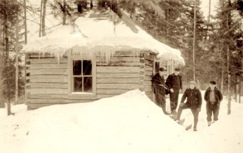
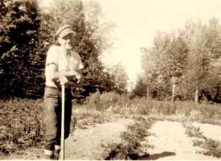
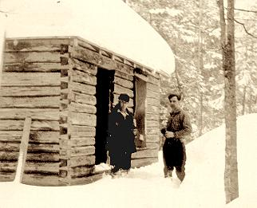

Little House in the North Woods |
|  John Nelson greets friends at his cabin. |
|
"Let me live in a house by the side of the road, and be a friend to man." The words of New Hampshire poet Sam Walter Foss come to mind upon contemplating a small cabin not far from the Little Sand Bay Visitor Center. This one-room log cabin, long hidden in dark woods, has become easier for visitors to find now that improvements have brought the park entrance road close to its door. The National Park Service has the responsibility and privilege of caring for homes associated with figures who made transcendent contributions to the nation's history. Each year thousands of visitors tour such sites as Franklin Roosevelt's mansion at Hyde Park, the birthplace of Martin Luther King, or the house at Appomattox where Grant and Lee signed the document that ended the Civil War. But the Service also preserves homes of men and women whose names few may remember, but who each played their own role in the nation's story. There are pioneer farmsteads, slave quarters, workers' tenements. Visiting these homes helps us understand and appreciate the accomplishments of "ordinary people" who turn out, upon reflection, to be pretty extraordinary in their own way. Consider, as one example, John Nelson, who built that one-room cabin at Little Sand Bay. Born in Norway in 1882, Nelson found himself faced with a difficult choice as he reached adulthood. It was hard for a young man to find work in Norway at the turn of the last century. Throughout the eighteen-hundreds, advances in medicine and agriculture had led to a decline in the death rate and a growth in population, but economic development had not kept up. More and more people found themselves competing for any available jobs and the nation's relatively small portion of arable land. Faced with this situation, many young Norwegians took the difficult step of leaving family and friends to seek a brighter future in America. Between 1825 and 1915, no country but Ireland sent a larger portion of its sons and daughters to this country than did Norway. John Nelson was one of those who chose to try his luck in the New World. Upon arrival, like many Norwegian immigrants, he made his way to Wisconsin. He settled for a while at Ashland, and found work as a lumberjack in the logging camps of the Lake Superior country. Logging was a hard way to make a living. It didn't leave much time for family life, and Nelson never married. He must have devoted himself to honing his skills with axe and saw, for acquaintances remember him as an expert woodsman. As his experience grew, he rose to become crew foreman, and finally set out on his own as an independent contractor. By the end of the 1920's, though, the heyday of northwoods logging was over. The great stands of pine were long gone, and the area's mills closed one after the other. There was still some hardwood and pulpwood to cut, but the need for lumberjacks dwindled. As John Nelson reached his fiftieth year, he found it necessary once more to start anew. |
|  John Nelson at his berry patch. Moving to Little Sand Bay, he found employment as hired man to the three Hokenson brothers at their fishery. In those days, there was plenty of work for an extra set of hands in the fishing business. He helped unload the boats, repaired nets, cut lake ice in the winter. He cut and shaped poles for pound net stakes, and he carved chunks of sandstone into weights that helped hold the nets in position. The pay would not have been much, but Nelson's needs were simple; he was used to a rugged life. Having found work, his next order of business was to build himself a home. Nelson constructed a temporary, tar-papered shack not far from the slough which empties into Lake Superior just east of the Town of Russell parking lot. He stayed there several years while he cleared a nearby patch of land and set aside logs to build a bigger, better cabin. Some time around 1938, he completed the structure we see today. This seemingly nondescript cabin is worth a close look. Though built on the eve of World War II, its construction harks back to traditional Scandinavian methods. Nelson used no power tools in his work; each log was cut and shaped with axe and plane. The careful dovetail joints at the corners testify to his skill and care. Hand-shaped joints testify to his skill. His living conditions were Spartan, but over the years Nelson added a few comforts. He never had an indoor toilet, but after a while he dug a well and ran a cold water line inside; wash water drained into a bucket around back. The biggest change came in the late 1940s, when electric power finally came to Little Sand Bay. Now he could have lights, and perhaps a radio. Friends say he never had a phone or a car. The logs of the cabin give evidence to what was unquestionably John Nelson's most memorable characteristic: his great strength. Everyone who remembers him agrees on one thing: he was the strongest man they ever met. "Oh, man, he was a real bull," commented one acquaintance. "I was just a kid then, and I thought the world of him. He used to pick up fish barrels and blocks of ice and move them around like they weighed nothing at all." When it came time to build his cabin, that strength proved its worth. Having no horse to pull the logs, he'd hook a chain to the fallen trees, wrap a harness around his chest, and drag the heavy timbers himself. Nelson continued working for the Hokenson family through the most active years of their fishing business. When the brothers had no jobs for him to do, he'd help their neighbor, Herman Johnson, or find someone with trees that needed cutting. In his spare time, he continued clearing land until he had enough open space for a productive berry patch. The strawberries he grew there provided a bit of extra income; old-timers in the town of Russell remember the delicious berries wistfully. Like logging, fishing could be a dangerous business, and John Nelson suffered at least one serious accident while working for the Hokensons. While using a winch to pull their boat out of the water, the handle suddenly spun free and struck him in the head, knocking him unconscious. When he awakened, he found he had lost his sight. Roy Hokenson and his wife Irene took him into their home and cared for him as he convalesced. Fortunately, his eyesight eventually returned, and Nelson could return to his cabin. The Lake Superior fishery collapsed in the decades following World War II. Years of fishing pressure had taken a toll on fish populations, and the invasion of the parasitic lamprey brought disaster. Once again, John Nelson saw the decline of an industry that provided his livelihood, but he was not there to witness it when the Hokenson brothers retired from fishing in 1962. You see, even the mightiest of men has to grow old some time. There came a day when a friend dropped by the cabin and was surprised to find Nelson not home. Searching around, he found the old logger collapsed in the forest, still harnessed to a tree. Nelson had suffered a stroke while trying to drag a log out of the woods as he'd done so many times before. Though he survived the stroke, he never completely regained his health, and he spent his remaining years in a nursing home. John Nelson died in 1959, a few days before his seventy-seventh birthday. After his death, a box was found in his little cabin, full of letters and postcards, written in Norwegian. These papers tell us one thing more about John Nelson: though an ocean separated him from the land of his birth, he never forgot the family and friends that he left in far-off Norway. |
|
To learn more... |
||
|
| ||
|
Return to... |
||
|
| ||
|
Presented by Apostle Islands National
Lakeshore |